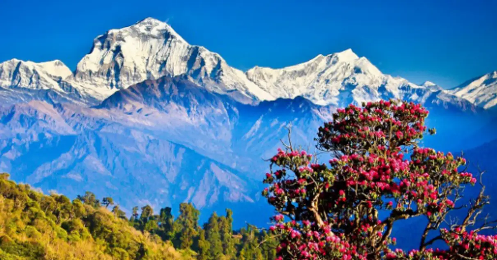
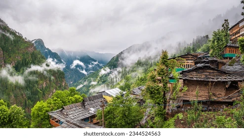
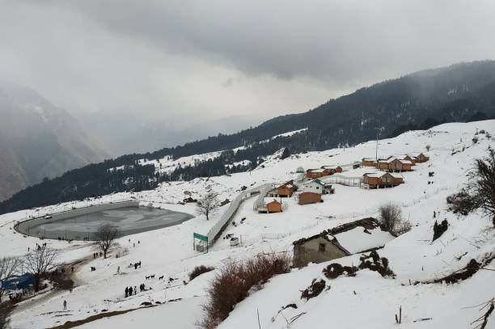

Spring (March - April)
Nature comes alive with blooming rhododendrons, clear skies, and pleasant weather. Ideal for trekking and sightseeing in Nainital, Mussoorie, and Rishikesh.

Summer (May - June)
Cool hill stations offer a respite from heat. Perfect for visiting Char Dham, hill towns like Almora, Auli, and family vacations in the mountains.

Monsoon (July - September)
While landslides may occur, this is the time for lush green landscapes, lower crowds, and peaceful retreats. Ideal for wellness and yoga getaways.

Winter (October - February)
Perfect for snow lovers and spiritual seekers. Visit Auli for skiing, Dehradun and Haridwar for peaceful holidays, and wildlife parks like Corbett.